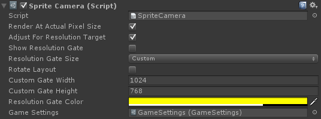

SpriteCamera
A camera with specific settings for use with Sprites. Specifically, it allows you to automatically display Sprites at the actual pixel size on screen.
Creating a SpriteCamera
There are two ways to create a SpriteCamera:
- Create a camera in your scene and add a SpriteCamera component to it.
- Drag the SpriteCamera prefab into your scene from Assets/SpriteFactory/Prefabs/SpriteCamera.
Render at Actual Pixel Size
Set the SpriteCamera.renderAtActualPixelSize property of the SpriteCamera component in the inspector to True. The orthographic size setting of the camera will be adjusted to render the Sprites at actual size. You can also set this value via scripting by calling the SpriteCamera.SetCameraToActualPixelSize function.
Resolution Gate
The SpriteCamera component has settings to allow you to view a resolution gate through the camera view. This allows you to see how much content fits on a screen of a particular resolution.
This is only for reference and only shows up when viewing through the camera in the Unity editor. These values are set in the inspector when the camera is selected.
Inspector

| Render At Actual Pixel Size | Size camera to render Sprites so 1 texel equals 1 pixel on screen. | |
| Adjust For Resolution Target | Enable to render sprites at 1 texel equals 1 pixel taking into account resolution target scaling. Render At Actual Pixel Size must be enabled for this to have any effect. | |
| Editor-Only Variables | These variables are only for use in the editor. They have no effect in a final build. | |
| Show Resolution Gate | Display a resolution box on screen to help visualize available screen space. | |
| Resolution Gate Size | The size of the resolution gate displayed on screen. | |
| Rotate Layout | Rotate the resolution gate to portrait or landscape. | |
| Custom Gate Width | Width of the resolution gate if showResolutionGate is set to Custom. | |
| Custom Gate Height | Height of the resolution gate if showResolutionGate is set to Custom. | |
| Resolution Gate Color | Color of the resolution gate. | |
| Internal Variables | For internal use only. Do not edit these variables. | |
| GameSettings | Link to the GameSettings file of SpriteFactory. * Do not edit this value. * |